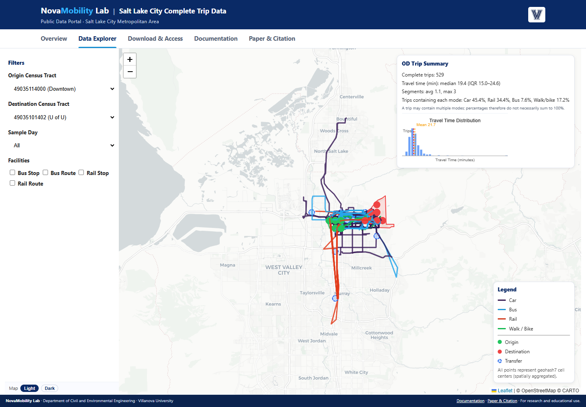

Open explorer ↗FHWA SUPPORTED Interactive explorer · Open data sample
See the complete journey.
Complete Trip Data Explorer
From individual trip segments to connected journeys. Explore approximately 28.8 million trip records across six Utah counties, linking car, transit, and active travel in one research resource.
Dashboard by Ruohan Li et al.Explore the project ↗